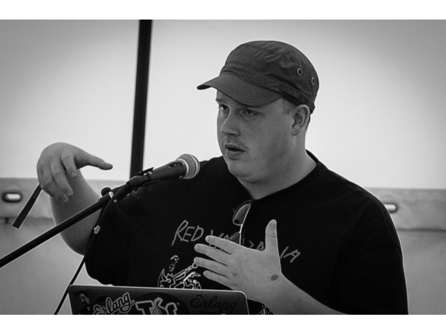
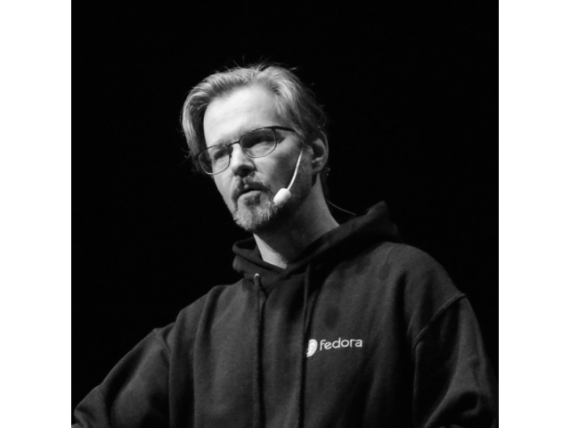
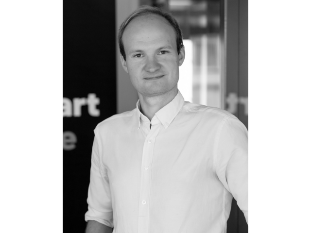

Speakers and Talks

Jimmy Ahlberg
How to talk your lawyer about FOSS
In this talk our two speakers from Ericsson and Nokia will try to share some best practices in how to talk to your legal department or outside legal counsel about FOSS, FOSS Licensing, Why and how to do FOSS, and finally (hopefully) getting the lawyers on your side in how your organizations consumes and contributes to open source.
The speakers will use real life examples of their respective companies FOSS journeys over the last few years. Ultimately working with the legal department should be a partnership to manage risk, increase efficiency, and ensure that FOSS can be used and contributed to in a frictionless fashion. Why is then often legal department and legal counsel seen as at best a speedbump and at worst an enemy?
The speakers go over commonalities in motivations and goals, how to breach culture and language barriers, how to educate and guide, and go over OpenChain (ISO/IEC 5230:2020) as a useful tool an accomplishing this.
Currently Mr Ahlberg is the Director of Open Source Policy with the Ericsson OSPO. Prior to the inception of the Ericsson OSPO he worked in different roles with various aspects of Open Source in the Ericsson organization, This included consumption of and contribution to Open Source, Compliance, the intersection of Standards and Open Source, and Open Source in M&A.
Jimmy Ahlberg is currently he chairperson of the OpenChain projects governing board.
Camila Ayres
Hacking Nextcloud to track your Period
Dysmenorrhea, or menstrual pain, occurs in 45 to 95 % of individuals who menstruate.
How can you deal with it by tracking your cycle while making sure big tech and health insurances do not have access to your data?
This talk will cover the following topics:
- What is Nextcloud?
- Why the data about your body should be yours
- What alternatives are out there to track your cycle
- Why talking about your period is important
- Which technologies you can use to create your own app
- How to develop it
- How to publish it
- Conclusion
Camila is from Brazil currently living in Berlin, Germany. She has worked for years as a front-end developer and got into open source by learning and doing C++/Qt development in the KDE community. She's now a desktop client developer at Nextcloud but just might do other things than C++ sometimes.

Carol Chen
InstructLab workshop
During this hands-on exercise, you will learn what is InstructLab and how you can leverage it to easily extend Large Language Models with your data and run them on your infrastructure. The tool makes it easy to download, run and chat with models locally on your laptop.
InstructLab is a fully open-source project from Red Hat and IBM that introduces Large-scale Alignment for chatBots (LAB).
Carol Chen is a Community Architect at Red Hat, supporting and promoting various upstream communities such as InstructLab, Ansible and ManageIQ. She has been actively involved in open source communities while working for Jolla and Nokia previously. In addition, she also has experiences in software development/integration in her 12 years in the mobile industry. Carol has spoken at events around the world, including AI_Dev in France and OpenInfra Summit in China. On a personal note, Carol plays the Timpani in an orchestra in Tampere, Finland, where she now calls home.
Supriya Chitale
From Private to InnerSource to Public: IKEA's journey to Open Source
Launching an open-source initiative within a company is more than just publishing code—it’s about shifting mindsets, navigating policies, and fostering a culture of openness. In this talk, we’ll share how our Open Source Program Office (OSPO) enabled teams to take their first steps into open source, from internal advocacy to successfully open sourcing our first repositories.
We’ll dive into key challenges, including establishing governance, securing leadership buy-in, and preparing teams for community engagement. we’ll also discuss the strategies that worked—fostering InnerSource ecosystem, streamlining processes, and providing practical support for developers.
Whether you're looking to start an open-source journey in your own organization or improve existing processes, this talk will provide insights, lessons learned, and actionable takeaways from our OSPO’s experience.
Supriya Chitale leads the Open Source Program Office at Ingka Group (IKEA). With 20 years of experience in software industry, she has a passion for developing people and teams in a multi-cultural and distributed environment. She loves to travel and learn about different cultures.

Natanael Copa
Maintaining an Open Source project without burning out
Maintaining a popular Open Source project can be both rewarding and demanding. In this talk I will share the lessons learned from maintaining the Alpine Linux since its inception. Join me as I reflect on the ups and downs of sustaining an Open Source project and discuss how we, as a community, can better support maintainers and our selves for the long haul.
Natanael Copa is a seasoned Open Source developer with over two decades of experience, actively contributing to the community since 2001. He is best known as the creator of Alpine Linux, a lightweight and security-oriented Linux distribution.
He has previously worked for Docker Inc. and currently works as a contractor on the k0s team for Mirantis.

Matias Daloia
Towards declaring crypto algorithms in SBOMs: crypto_algorithms_open_dataset
Cryptographic algorithms are foundational to secure software, yet their declaration and tracking remain inconsistent across industries. To address this, SCANOSS published the crypto_algorithms_open_dataset (CC0 license), which was officially presented here at FOSSNorth in 2024 as part of a wider talk about SCANOSS open data journey.
This open data set is a comprehensive resource cataloging cryptographic algorithms with open-source implementations. This initiative marked the first step toward standardizing cryptographic algorithm declarations in Software Bill of Materials (SBOMs). Such standardization can reduce inefficiencies in compliance and foster collaboration across industries—from export control and security compliance to quantum safety readiness, among other benefits, that will be highlighted during the talk.
The talk will will explore the dataset’s evolution, its impact in standardization initiatives, SCANOSS's efforts to improve crypto algorithms detection capabilities using crypto_algorithms_open_dataset and the coming donation of the open data set to Software Transparency Foundation, as a way to incentive contributions from other parties.
Attendees will gain insights into the practical implications of these efforts, including how organizations can incorporate this dataset into their compliance workflows and how open-source contributors can participate in shaping this standardization effort.
Matias is a Senior Software Engineer working at SCANOSS. He's been involved in all the new client facing OSS tools that SCANOSS have released in the last couple months, and the ones that are about to be released, as well as in the crypto_algorithms_open_dataset that will be adopted by SPDX.

Hagen Echzell
Interoperable Infrastructure for Universities, Enterprises and the Public Sector
Many organizational processes cross the boundaries of individual organizations. This is especially true for the academic sector where mobility programs like "Erasmus+" enable students to be enrolled with different universities throughout their studies. However, the technical means to enable the necessary collaboration between different institutions and their administrations are often not adequate. Many tools for group messaging, file exchange, or domain-specific applications do not work or lack functionality as soon as users or data from outside an organization are involved, such that E-Mail is a widely used fall-back.
Based on terminology from the recent Interoperable Europe Act - (IEA) we will present technical and semantic interoperability solutions to address these issues. On the technical side, we present two existing protocols: OpenCloudMesh is an open file sharing protocol implemented by open-source solutions like Nextcloud and ownCloud. The Matrix protocol enables secure, decentralized group and instant messaging, but might also support further use cases like video conferences in the future.
On the semantic side, we present a case study where we, based on existing vocabularies, model a university course catalog in the Resource Description Framework (RDF) serialization format JSON-LD. The RDF representation of the course data introduces a semantic context to the course data, making the exchange of the catalog data independent of specific APIs, thus enabling interoperability across heterogeneous data structures and university-specific systems.
The introduced technical and semantic interoperability solutions enable public sector bodies like universities and enterprises to improve their cross-organizational collaboration without giving up their digital sovereignty to a centralized, commercial actor.
Hagen Echzell works in the Linux team at the University of Oslo and studies information security. He is interested in the overlap of technology and digital policy, which is why he helped creating the working group for democratic digitalization at attac Norway.

Åke Forslund
Tabletop games <3 FOSS
Frozen Maze Games has released two tabletop games into the world, Perilous Pond and Bushido Duels. Both were developed and produced much thanks to free / open source software.
This talk is a look-back on a journey going from a game idea, to creating mock-ups, to working with external artists, to building resources for crowdfunding, and finally to a physical product.
This is a talk about what makes open and free tools and standards great.
He's just this guy you know?
Embedded software developer during the day, wannabe boardgame designer at night.

Alexander Hansen Færøy
Anonymity Loves Resilience: The Case of Tor
Tor is an anonymity network consisting of relays run by thousands of volunteers worldwide aiming to give back privacy on the Internet. The network carries around 350 Gbit/s of traffic and helps between 2,000,000 and 8,000,000 users daily.
In this talk, we will explain how different design decisions make Tor resilient against authoritarian and other threats and the associated challenges. The topics we will cover include the open and transparent way we develop Tor, as a free software project, the distributed trust embodied in Tor's design, the decentralized relay operator community powering the Tor network, and how funding works at the Tor Project.
Alex is a hacker based in Copenhagen, Denmark. During the day, he heads up Tor's Network Team. He enjoys traveling, reading, and planning the annual BornHack hacker camp. Alex has, over the years, contributed to numerous free and open source software projects.

Ignat
An engineer's guide to Linux Kernel upgrades
Because the kernel code executes at the highest privilege level and a kernel bug usually crashes the whole system, many SREs, production engineers and system administrators try to avoid upgrading the kernel too often for the sake of stability. There is a tendency to create more obstacles to Linux kernel releases (requiring more approvals etc). But introducing all these obstacles and not treating kernel updates like any other software usually significantly increases the risk for the company and their service of being exploited.
One of the reasons SREs and engineers are too afraid of ANY kernel upgrade is that they don’t actually know the details about Linux kernel release process and policy. This talk tries to demystify Linux Kernel releases and provides a guide on how to distinguish a kernel bugfix release from a feature release. We also describe how kernel releases are implemented in our company and propose possible approaches to deploy kernel upgrades regularly with minimal risk.
TBD

Ignat
What is Linux kernel keystore and why you should use it in your next application
Did you know that Linux has a full-featured keystore ready to be used by any application or service it runs? Applications can securely store and share credentials, secrets and cryptographic keys, sign and encrypt data, negotiate a common encryption key - all this by never touching a single byte of the underlying cryptographic material.
This is especially useful in the post-heartbleed and cloud-native environments, where services authenticate and securely talk to each other using some kind of credentials. But if a network-facing service also has some secret in its process address space, it sets itself up for a security failure as any potential out-of-bounds memory access vulnerability may allow the secret to be leaked. Imagine a world where you don’t have to run an SSH agent just to protect your SSH keys.
On top of keeping your secrets secret Linux keystore nicely integrates with specialized security hardware, like TPMs and HSMs and may provide a single entry point on the system for applications to obtain their secrets. Thus Linux keystore is a very useful building block for a corporate key management system.
TBD

Georg Koppen
Anonymity Loves Resilience: The Case of Tor
Tor is an anonymity network consisting of relays run by thousands of volunteers worldwide aiming to give back privacy on the Internet. The network carries around 350 Gbit/s of traffic and helps between 2,000,000 and 8,000,000 users daily.
In this talk, we will explain how different design decisions make Tor resilient against authoritarian and other threats and the associated challenges. The topics we will cover include the open and transparent way we develop Tor, as a free software project, the distributed trust embodied in Tor's design, the decentralized relay operator community powering the Tor network, and how funding works at the Tor Project.
Georg has been involved with Tor for more than 10 years. He is currently focusing on keeping the Tor network in a healthy state and its users safe.
Mirza Krak
Taking Python beyond scripting
Python is one of the most popular programming languages, predominantly with beginners, web developers, data science and AI. It is also the go-to language for many to create smaller scripts or automations. But how do you take it to the next level when working on a larger codebase? In a recent project we had explored this and discovered a vibrant, evolving ecosystem which made me eager to share my findings.
In this talk, I’ll share insights on how to elevate Python beyond scripting. We’ll explore key language features such as type annotations, tools for testing and static analysis, and modern dependency management practices. The discussion will include projects like pylint, pyright, pytest, ruff, uv and more, offering a comprehensive view of Python’s ecosystem. We will bring it all together by looking at an example project utilizing community templates.
Attendees will gain a fresh perspective on Python’s capabilities and learn practical approaches to harness its ecosystem to build scalable and maintainable applications.
Mirza has 15 years experience in embedded hardware/software development and has held leading senior technical positions in multiple startups/scale-ups. He is currently the CTO of ID8 Engineering AB. Mirza has previously spoken at ELCE/ELC, NDC Techtown and foss-north.

Cornelius Kölbel
Centrally managed Multi Factor Authentication with privacyIDEA
A lot of your data and processes may have moved to the cloud. But you still have valuable data on your personal devices or the notebooks provided to the employees.
A strong authentication to these devices is mandatory. privacyIDEA is a modular authentication system that allows the IT department to manage many different kind of 2nd factors for a huge number of users. It is open source and runs on premises - under your control.
The 2nd factors could be SMS token (yes!), Email, TOTP or HOTP Smartphone Apps, PUSH tokens, keyfob tokens, x509 certificates, SSH keys, Yubikeys, Webauthn/FIDO2 tokens and Passkeys... You can connect any application to privacyIDEA and thus add strong multi factor authentication to your Single Sign On, SSH login, VPN or the Login to your Notebook.
In this talk we will take a general look at privacyIDEA and how it can be used to secure the users' notebooks with a FIDO2 device - centrally managed - even offline.
Cornelius is into multifactor authentication for roughly 20 years. He is the project lead of the multifactor authentication system privacyIDEA. As a consultant Cornelius learnt to unterstand customers requirements in heterogenous networks first hand. He planned and implemented several PKIs for smartcard usage and was one of the first to work on the interoperability of the Aladdin eToken between Windows and Linux. In 2006 he started one of the the first open source one time password systems implementing the HOTP algorithm. In 2009 he initiated an enterprise OTP solution as product manager. In 2014 he kicked off the open source privacyIDEA project and founded the company NetKnights to provide consultancy for strong and secure authentication.
During the last 15 years Cornelius spoke at several conferences in Germany, in the Netherlands, in Belgium (FOSDEM), in Denmark and in the U.S.
Benjamin Lindqvist
Embracing Open Source in Embedded Development: From Proprietary to Modular and Collaborative
Embedded development has long been dominated by proprietary, rigid architectures, limiting innovation and accessibility. However, the landscape is rapidly evolving as open source software, modular hardware standards, and collaborative development transform the field.
In this talk, we’ll explore how open standards and tools like Zephyr RTOS, KiCAD, and Digilent PMod enable ultra-fast rapid prototyping, reducing barriers to entry and accelerating development cycles. We’ll discuss how these technologies empower engineers to build scalable, maintainable, and interoperable systems while fostering an ecosystem of shared knowledge and innovation.
Whether you’re an embedded systems veteran or just stepping into the field, this session will showcase how open source principles are shaping the future of embedded development.
TBD
Shanmugapriya Manoharan
From Private to InnerSource to Public: IKEA's journey to Open Source
Launching an open-source initiative within a company is more than just publishing code—it’s about shifting mindsets, navigating policies, and fostering a culture of openness. In this talk, we’ll share how our Open Source Program Office (OSPO) enabled teams to take their first steps into open source, from internal advocacy to successfully open sourcing our first repositories.
We’ll dive into key challenges, including establishing governance, securing leadership buy-in, and preparing teams for community engagement. we’ll also discuss the strategies that worked—fostering InnerSource ecosystem, streamlining processes, and providing practical support for developers.
Whether you're looking to start an open-source journey in your own organization or improve existing processes, this talk will provide insights, lessons learned, and actionable takeaways from our OSPO’s experience.
Shanmugapriya is an Open Source & InnerSource SME, working as Engineering Advisor & Coach at Open Source Program Office (OSPO), IKEA IT AB. She has several years of experience in driving initiatives and projects including Open Source and InnerSource projects, while working in organizations like HPE and Dell Technologies.
She specializes in Cloud technologies, Containerization, Virtualization and Enterprise Storage. She holds a Master’s degree in Software System and Bachelor’s degree in Computer Science and Engineering.
Sakshi Nasha
AI for Everyone: Unleashing the Power of Open Source Tools
Explore the world of open-source AI tools that make building and deploying AI models faster and easier than ever. We'll cover powerful frameworks like Mistral AI, Hugging Face, OpenCV, and Tensorflow and show how these tools can help you rapidly develop AI solutions. Learn strategies to build AI applications in no time, leveraging pre-trained models, low-code platforms, and scalable deployment techniques. Whether you're a beginner or an experienced developer, this session will equip you with the tools and strategies to unlock the full potential of AI.
I am an enthusiastic learner who believes that technology can create extraordinary impacts on the world. Deeply diving into concepts has strengthened my understanding. I enjoy public speaking and am passionate about communities.
Beyond technology, I'm also a Zonal Basketball, Badminton, and Football player. I express my thoughts through articles and poems. My passion lies in developing innovative solutions and working with computers, fascinated by their ability to revolutionize the world with a few clicks and keystrokes. When away from the keyboard, you can find me trekking or cycling around the city!

Bassem Nomany
Embedded Development Made Easy: A Guide to Open Source Platforms and Maximizing value for your product.
Talk outline
- Intro of the speaker and history with embedded open source platforms.
- How open source platforms ecosystem is removing walls for product creation today.
- The economic incentives to use Open Source platforms in the products.
- Design choice between Yocto and Zephyr and what are the tradeoffs.
- Choosing the right silicon vendor to maximize value for the product lifecycle.
- Cloud connectivity offerings for each platform.
- What's not included in each open source platform and the effort required to commercialize open source platforms
- Conclusion and Lessons learned
Bassem has 12+ years of experience in embedded HW/SW development and has served as team Lead & Architect for Daimler's next-gen Infotainment platform and been a lead SW architect in several Auto OEM projects. He understands the power of free open source projects to make awesome products and contribute back.
He specializes in: Resource constrained IoT devices and RTOS. Rich UX Rich information and media systems.

Daniel Madalitso Phiri
Building Agents in JavaScript
From chaotic LLM responses to type-safe AI agents: Learn how TypeScript's discriminated unions transform messy AI responses into predictable systems. Build runtime validators and handle streaming responses. See live demos of production-ready patterns for routing both simple LLMs and complex agents, all with open-source tools and models.
Daniel is an advisor and developer with a specialisation in web technologies and open-source tooling. He works in Developer Experience at Weaviate, an open-source AI-Native vector database.

Jimmy Sjölund
The Generalist Advantage: Your Superpower
In a world that often celebrates specialisation, the generalist's path is frequently misunderstood. What is a generalist, and why is this diverse skill set your greatest asset? Celebrating polymaths like Leonardo da Vinci and Natalie Portman, I challenge the notion that being a 'jack of all trades, master of none' is a drawback. Instead, I affirm the power of mastering multiple fields and show how it can become your superpower.
Through my personal journey as a multipotentialite, I’ll share how I overcame imposter syndrome and used the Pareto Principle to thrive across various domains. In the open source world, where innovation relies on collaboration and the blending of diverse skills, generalists bring unique value by connecting ideas, bridging gaps, and enabling community-driven problem-solving.
Deep knowledge can fade, but passion for exploration lasts. This talk is a roadmap for anyone who’s ever felt out of place in a world that prizes specialisation. You’ll discover how to harness your wide range of interests, make exploration your greatest strength, and contribute to the vibrant, evolving ecosystems of open source communities.
And even if you’re not a generalist yourself, you’ll gain insights into why having one on your team can be a game-changer, bringing fresh perspectives, bridging diverse skill sets, and driving innovation in ways that specialists alone might not achieve.
Jimmy Sjölund is an organisational transformation expert with extensive experience sparking change at large, multinational companies. As Principal Agile Practitioner at Red Hat, he’s focused on creating organisational improvements and improving team excellence through agile and lean workflows. He’s published articles and book chapters on topics like work visualisation techniques, asynchronous collaboration, and leading through open principles and behaviours.
Jimmy is a seasoned public speaker at several conferences, including Agila Sverige, foss-north, ScanAgile, All Things Open, and more. He also serves as an Ambassador for the Open Organization project and community and is a maintainer of the Open Decision Framework.

Eleftheiria Stefanaki
How to talk your lawyer about FOSS
In this talk our two speakers from Ericsson and Nokia will try to share some best practices in how to talk to your legal department or outside legal counsel about FOSS, FOSS Licensing, Why and how to do FOSS, and finally (hopefully) getting the lawyers on your side in how your organizations consumes and contributes to open source.
The speakers will use real life examples of their respective companies FOSS journeys over the last few years. Ultimately working with the legal department should be a partnership to manage risk, increase efficiency, and ensure that FOSS can be used and contributed to in a frictionless fashion. Why is then often legal department and legal counsel seen as at best a speedbump and at worst an enemy?
The speakers go over commonalities in motivations and goals, how to breach culture and language barriers, how to educate and guide, and go over OpenChain (ISO/IEC 5230:2020) as a useful tool an accomplishing this.
Eleftheria Stefanaki works as FOSS legal counsel at Nokia

Daniel Stenberg
What comes after world domination?
Open Source has in many ways already won. It is used in every product by every company, to very a large degree. But we are not done. We can improve: we can take this further, we can make our projects better, we can enhance our communities and make sure it is done sustainably. The future is ours.
Starting off with a look on the Open Source explosion that has taken us to this point, Daniel discusses areas of improvement and dreams and visions for our future.
Award-winning developer Daniel Stenberg is probably best known for his work on cURL. Besides cURL, he's participating within IETF and gives talks about open source and internet things.

Michael Cardell Widerkrantz
Forking QEMU to emulate and secure the Tillitis TKey
The Tillitis TKey is an innovative new USB hardware security device which allows running small applications in a more secure way. The applications can be used for things like authentication, cryptographic signing, generating random numbers, and similar functions.
To help emulate and secure the Tillitis TKey we added support for the TKey to the QEMU system emulator. This allows a developer of firmware or device apps to inspect, debug, and validate the functions, including observing memory like the stack, registers, et cetera, while running.
Using an emulator with strong observability is immensely helpful not only when developing and debugging, but also when attempting to find out the impact of a security vulnerability. In this talk I will do a walkthrough of such a case.
MC is a Member of Technical Staff at Tillitis, working mostly with software on everything from the firmware, the emulator, development tools, and the client and device apps. He's also supporting hardware development from a software perspective.

Roman Zhukov
Automating dependency selection with open-source tools at scale
Engineering teams in companies at all levels ingest open-source dependencies nearly every day. No matter of if you’re developing commercial SW products or an IT department “just” utilizing it for the internal needs. Not all of them are at the same quality, even if provide similar functionality. For the very small project and If you have 1 or 2 open-source dependencies - you can evaluate what’s better manually, simply having a look at the repos, if you know what to look for. But when it comes to dozens and eventually hundreds of packages - it’s impossible to assess them all manually.
Attacks on software supply chains (like high-profile Log4j vulnerability or Codecov attack or Python/NPM repo poisoning or intentionally malicious commits to XZ) showed us that we can’t rely on just random or “old good” open-source project without the proper verification, at each stage in your development pipeline.
Let’s talk about health metrics and essential checks (e.g., based on CHAOSS and 8knot) that all developers should consider and how to easily automate them. I’ll show practical examples how industry leaders use tools like OpenSSF Scorecard and beyond to maintain open-source security posture at scale.
Key points:
- Why assessing the health of dependencies is important for everybody
- Curated list of frameworks and standards that work for engineers
- Practical use-cases (wins & fails) with tools like OpenSSF Scorecard, CHAOSS/k8not and some new tools
- Bonus:how to collect metrics rolling up benefits for management and business
Practicing cybersecurity expert, engineer and manager (15+ years), (ISC)2 CC (Certified in Cybersecurity). Currently - Principal Security & Community Architect at Red Hat. Ex. - Head of Product Security & Privacy for Data Center & AI SW at Intel.
Roman has broad experience from security architecture & threat modelling to secure development & tooling to vulnerability management & incident response to security education programs for engineers & senior managers. Currently Roman leads industry engagement and several Open-Source security initiatives: Security Champion for Linux Foundation projects, contributor to several working groups under OpenSSF, Eclipse, other foundations. Lecturer at Universities and commercial educational centers. Security Advisor and Evangelist. Mentor and consultant for startups. Recognized as the best speaker and mentor several times.